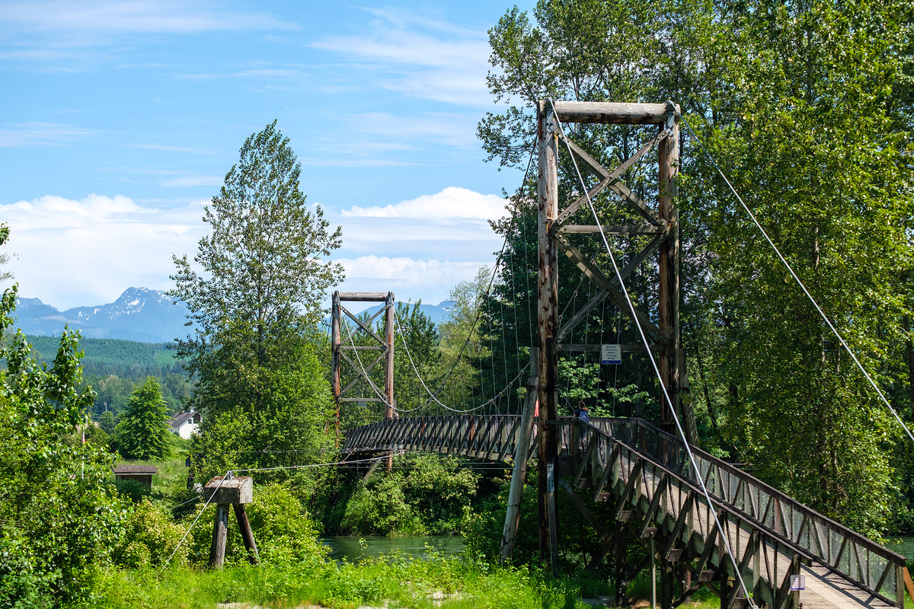

Наше обладнення та софт:
Camera: FUJIFILM X-T4;
Lens: Fujifilm XC 35 mm f/2;
Raster Soft:Adobe Photoshop 2021;
Vector Soft:Figma;
3D Animation: Maya;
3D Modeling: 3Ds Max;


Фото Семпл #1
Фото Семпл#2